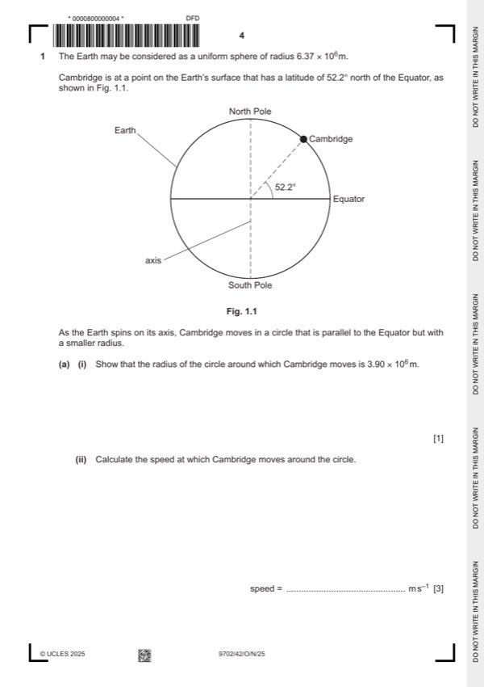

Question 1

Original paper page 4
Part 1(a)(i) — solution
- [A1] Obtain/use: radius = 6.37 106 cos 52.2° = 3.90 106 m
Mark points
- [A1] Obtain/use: radius = 6.37 106 cos 52.2° = 3.90 106 m
Part 1(a)(ii) — solution
- [A1] Obtain/use: v = (2 3.90 106) / (24 60 60)
Mark points
- [A1] Obtain/use: v = (2 3.90 106) / (24 60 60)
Part 1(b)(i) — solution
- [A1] Obtain/use: = (58.6 2802) / (3.90 106)
Mark points
- [A1] Obtain/use: = (58.6 2802) / (3.90 106)
Part 1(b)(ii) — solution
- [B1] Obtain/use: arrow pointing horizontally to the left
Mark points
- [B1] Obtain/use: arrow pointing horizontally to the left
Part 1(b)(iii) — solution
- [B1] Obtain/use: arrow from student pointing along the dotted line, labelled ‘weight’
- [B1] Obtain/use: upwards arrow from student pointing in a direction to the left of normal and above the tangent to the Earth, labelled ‘contac t
Mark points
- [B1] Obtain/use: arrow from student pointing along the dotted line, labelled ‘weight’
- [B1] Obtain/use: upwards arrow from student pointing in a direction to the left of normal and above the tangent to the Earth, labelled ‘contac t